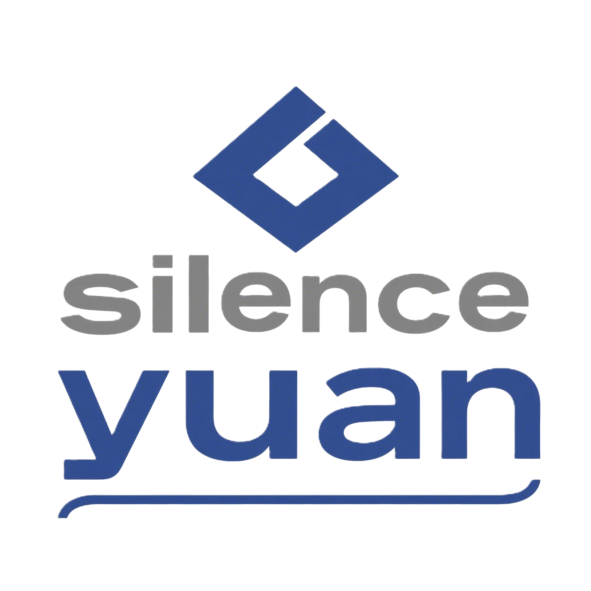

关于我
我是一名充满好奇心的高一新生，正行走在探索代码与设计世界的路上。我善于利用课余时间钻研技术、创造有趣的项目，并坚信代码是连接想象与现实的桥梁。
无论是构建一个有趣的网页，还是探索一个新的算法，都让我无比兴奋。感谢你的来访，希望我的作品能给你带来启发！
我的作品
这里是我将想法付诸实践的一些尝试！
项目一：eulark的mc服务器官网
第一个开发的网站，也算是在模板的基础上魔改的
项目二：contega的mc服务器官网
一个响应式，第一个独立开发的官方网页，包含了注册，登录，签到系统
项目三：我的个人主页
所有的新技术功能都在这里测试和展示